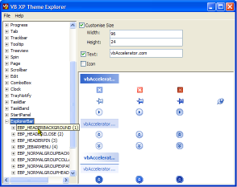

VB5 Theme Explorer (47K)
VB5 Theme Explorer (47K)
 VB6 Theme Explorer (44K)
VB6 Theme Explorer (44K)
 20 Feb 2003
20 Feb 2003
First Posted
 vbAccelerator No Status Bar Control
vbAccelerator No Status Bar Control
 vbAccelerator Progress Bar Class
vbAccelerator Progress Bar Class
 Adding XP Visual Styles to Your Visual Basic Application
Adding XP Visual Styles to Your Visual Basic Application

Drawing with XP Visual Styles
All the declares and constants you need to draw custom controls using XP Visual Theme components.
This sample demonstrates using the UxTheme API calls to draw the various objects provided by current Windows XP Theme. This can be a very powerful and simple technique to providing the latest UI effects in controls and applications, as demonstrated by the No Status Bar and No Progress Bar samples.
The UxTheme API
One of the great things about XP Visual Styles is that Microsoft have chosen to expose the API for drawing at two different levels. At the simple level, ComCtl32.DLL can automatically convert all of your controls to draw with the new style, provided that you link to it - not that this is difficult! At the more complex level, all of the components that ComCtl32.DLL draws in place of the existing controls can also be drawn by your own application by using functions exposed by UxTheme.DLL.
200 KM/H In The Wrong Lane
Whilst that's a nice thing, the actual API itself is provided through the medium of barely documented string constants and some particularly clouded enumeration devices in the Platform SDK files Uxtheme.h, Tmschema.h and SchemaDef.h. Fine if you're writing in C/C++, but not so easy for other languages. So in the interest of doing something helpful I provide an application here which attempts to draw all of the things that the selected theme is capable of (and some of the features which are advertised in the API don't seem to have made the grade; not least nicer menus..). The style explorer shows all the potentially available parts for drawing and the associated states in a TreeView: you can either try and draw everything in the current theme or you can drill down and see what particular parts and states consist of.
Slow Down, Speedy
The sample really contains two main parts to make it run: an XML file (uxtheme.xml) which contains all of the classes that the UXTheme API allegedly draws, and each of the possible parts and states associated with these, and a class (cUXTheme.cls) which makes its best attempt to draw an item in a generic way. I say best attempt because you actually can't really create a generic routine to draw all possible parts and states in the same way: some parts look good with text over the top, whilst others, like arrow and icon buttons, look terrible. Regardless of that, lets get on to what classes, parts and states are and how to use the API and see what you can do.
- >Classes
The items that can be drawn by UxTheme are divided into classes describing which type of control you're trying to draw. So for example, what you need to draw for a ProgressBar is different to a ScrollBar class.
- Parts
Controls often consist of components, which are referrred to as Parts in the API. For example, a scroll bar has buttons at either end, a thumb track slider and a background, all of which are drawn using different visual components.
- States
Controls often look different depending on whether the mouse is over a part of the control or when it is pressed. The UXTheme State concept allows different visual displays depending on which state a particular part is in.
Its easy to see these concepts when you try the Explorer sample. There are three levels in the TreeView - Classes, Parts and States, and most of them have reasonably descriptive names. Note that if nothing draws this isn't a bug, its just that the current theme doesn't support the combination in question (although as of the time of writing drawing only fails at the entire class level, and anything underneath works just fine).
How Soon Is Now?
Actually using the UxTheme API divides into three parts:
- Get a handle to the theme data
This allows you to determine whether a theme is available for the item you want to draw and if it is, provides you with a hTheme handle which is needed for any subsequent drawing. If you're trying to write code which runs on all systems, then you should use VB's horrendous On Error Resume Next to trap failures: if an error occurs you just proceeed as if no Visual Style was available.Private Declare Function OpenThemeData Lib "uxtheme.dll" _ (ByVal hwnd As Long, ByVal pszClassList As Long) As Long ... Dim hTheme As Long On Error Resume Next hTheme = OpenThemeData(m_hWnd, StrPtr(sClass)) On Error Goto 0 If hTheme = 0 Then ' You need to choose some other way to draw the ' component Else ' You can draw using XP Visual Styles End If - Drawing the Selected Component
There are four different calls you can use to assist in drawing the item in question. However, you have to bear in mind that some options don't make sense for some components. For example, if you're drawing a ScrollBar thumb then although you can draw text and an icon over it using the API, this component looks strange with text and/or icons. On the other hand, a StatusBar panel can quite reasonably include these components.
Once you've decided what you want to draw, the API calls are DrawThemeParentBackground and DrawThemeBackground to draw the background to the item and DrawThemeText and DrawThemeIcon for the text and image.
There are also APIs to help you determine the ideal size of the item; depending on whether text and icons should be shown or not you can use GetThemePartSize, GetThemeBackgroundContentRect, GetThemeBackgroundContentRect and GetThemeTextExtent to try and work this out.
You can refer to the source code of the Theme Explorer sample and try the different options to see what happens when use these APIs. However, typically you want to draw the background and then (optionally) draw the text, which would be done like this:
Private Declare Function DrawThemeBackground Lib "uxtheme.dll" _ (ByVal hTheme As Long, ByVal lHDC As Long, _ ByVal iPartId As Long, ByVal iStateId As Long, _ pRect As RECT, pClipRect As RECT) As Long Private Declare Function DrawThemeText Lib "uxtheme.dll" _ (ByVal hTheme As Long, ByVal hdc As Long, ByVal iPartId As Long, _ ByVal iStateId As Long, ByVal pszText As Long, _ ByVal iCharCount As Long, ByVal dwTextFlag As Long, _ ByVal dwTextFlags2 As Long, pRect As RECT) As Long Public Enum DrawTextFlags DT_TOP = &H0 DT_LEFT = &H0 DT_CENTER = &H1 DT_RIGHT = &H2 DT_VCENTER = &H4 DT_BOTTOM = &H8 DT_WORDBREAK = &H10 DT_SINGLELINE = &H20 DT_EXPANDTABS = &H40 DT_TABSTOP = &H80 DT_NOCLIP = &H100 DT_EXTERNALLEADING = &H200 DT_CALCRECT = &H400 DT_NOPREFIX = &H800 DT_INTERNAL = &H1000 DT_EDITCONTROL = &H2000 DT_PATH_ELLIPSIS = &H4000 DT_END_ELLIPSIS = &H8000 DT_MODIFYSTRING = &H10000 DT_RTLREADING = &H20000 DT_WORD_ELLIPSIS = &H40000 DT_NOFULLWIDTHCHARBREAK = &H80000 DT_HIDEPREFIX = &H100000 DT_PREFIXONLY = &H200000 End Enum Public Enum DrawTextAdditionalFlags DTT_GRAYED = &H1 '// draw a grayed-out string End Enum ... Dim lR As Long Dim tTextR as RECT ' m_hDC is the DC to draw to ' m_lPartId and m_lStateId are the part + state to draw ' tR is a RECT specifying the area to draw in ' m_sText is the text to draw ' m_eAlign is a combination of the DrawTextFlags values lR = DrawThemeBackground( _ hTheme, _ m_hDC, _ m_lPartId, _ m_lStateId, _ tR, tR) lR = GetThemeBackgroundContentRect( _ hTheme, _ m_hDC, _ m_lPartId, _ m_lStateId, _ tR, _ tTextR) lR = DrawThemeText( _ hTheme, _ m_hDC, _ m_lPartId, _ m_lStateId, _ StrPtr(m_sText), _ -1, _ m_eTextAlign, _ 0, _ tTextR) - Closing The Theme Data Handle
Whenever you get a non-zero hTheme from the OpenThemeData call you should always try to close it again once you've finished:
Private Declare Function CloseThemeData Lib "uxtheme.dll" _ (ByVal hTheme As Long) As Long ... ' Drawing now complete CloseThemeData hTheme
I'll Have a Dry Martini
That's it for this sample. I'm now off to the freezer where a bottle of Bombay Sapphire and a Martini glass are both waiting...